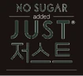

이번 달 입금, 언제 들어올까?
입금 날짜가 매달 달라지면 운영 계획이 흔들립니다.
이츠밀이 드리는 것지정 마감 후 7일 이내 정기 집행. 일정과 기준은 상담에서 먼저 안내해 드립니다.네 가지 약속 보기
 공식 파트너
공식 파트너
좋은 식자재로 아이들 밥상은 든든하게, 원장님의 운영 고민은 가볍게. 지정 마감 후 정기 집행부터 단가·공급, 식단·간식, 서류까지 네 가지 약속으로 답합니다.
동원의 청정 브랜드와 함께 하루의 식단을 준비합니다.

제철 도감, 위생 점검표, 자주 놓치는 위생 10가지, 이달의 식단표. 로그인 없이 바로 보시고, 출력하거나 이미지로 저장해 쓰세요. 마음에 들면 옆 원장님께도 보내 주세요.
 02
위생관리 점검표
점검일과 점검자만 적고 체크하면 그날의 기록이 남는 A4 한 장입니다. 개인위생부터 시설까지 5개 영역 15개 항목, 조리실 벽에 붙여 매일 쓰세요.
02
위생관리 점검표
점검일과 점검자만 적고 체크하면 그날의 기록이 남는 A4 한 장입니다. 개인위생부터 시설까지 5개 영역 15개 항목, 조리실 벽에 붙여 매일 쓰세요.
 03
자주 놓치는 위생 10가지
놓치기 쉬운 위생 10가지를 ‘잘못된 예 → 바꿀 한 가지’로 짝지었습니다. 조리실에 게시하거나, 새 조리원 교육 때 한 항목씩 짚어 보세요.
04
이달의 식단
월~금 오전·오후 간식을 요일별로 한눈에 봅니다. 간식은 동원이팜 간식 식단표 기준이고, 점심은 구성을 보여 드리는 예시입니다.
03
자주 놓치는 위생 10가지
놓치기 쉬운 위생 10가지를 ‘잘못된 예 → 바꿀 한 가지’로 짝지었습니다. 조리실에 게시하거나, 새 조리원 교육 때 한 항목씩 짚어 보세요.
04
이달의 식단
월~금 오전·오후 간식을 요일별로 한눈에 봅니다. 간식은 동원이팜 간식 식단표 기준이고, 점심은 구성을 보여 드리는 예시입니다.

이츠밀이 궁금하시다면 — 네 가지 약속 · 브랜드 스토리 · 이달의 레시피 · 식단표
상담에서 자주 나오는 질문 네 가지입니다. 이츠밀이 드릴 수 있는 것을 하나씩 붙였습니다.
입금 날짜가 매달 달라지면 운영 계획이 흔들립니다.
이츠밀이 드리는 것지정 마감 후 7일 이내 정기 집행. 일정과 기준은 상담에서 먼저 안내해 드립니다.네 가지 약속 보기
정해 둔 예산표가 달마다 어긋납니다.
이츠밀이 드리는 것식단 짜기 전 ‘이번 달 제철’을 확인하는 제철 도감, 동원홈푸드 자체 PB 500여 종 중 시설에 맞는 품목 제안, 계약 후 영업일 5일 이내 발주.제철 도감 보기
식단과 간식 고민이 매주 반복됩니다.
이츠밀이 드리는 것월~금 오전·오후 간식을 요일별로 보는 이달의 식단표, 이팜키즈 등 동원 간식 라인업.식단표 보기
동네 마트 영수증은 모으고 붙이고 맞춰 보는 일이 끝이 없습니다.
이츠밀이 드리는 것매일 체크하면 기록이 남는 위생 점검표(A4).점검표 받기
상담에서 자주 나오는 상황을 여섯 가지로 그려 봤습니다. 우리 센터와 가까운 상황을 찾아 보세요.
실제 사례와 유사하게 재구성한 사례입니다.
우리 센터 상황으로 이야기해 보고 싶으시다면 상담을 신청해 주세요.
말뿐인 약속은 빼고, 지킬 수 있는 것만 정했습니다. 정한 것은 매달 같은 방식으로 지킵니다. 약속마다 자세한 내용을 따로 정리해 두었습니다.
매월 지정 마감 후 7일 이내. 집행 기준과 일정을 상담 단계에서 먼저 안내합니다.
자세히 02동원홈푸드 자체 PB(이팜키즈 · be chef) 500여 종과 전국 물류망으로 예산 계획을 세우기 쉽게 돕습니다. 계약 후 영업일 5일 이내 발주가 가능합니다.
자세히 031식 1국 4찬 간식. 동원이팜 월간 자료를 시설 인원과 연령에 맞춰 조정합니다.
자세히 04납품부터 정산까지 기록이 남습니다. 거래명세서를 전산으로 발행해 증빙 정리 시간이 줄어듭니다.
자세히단가를 월 2회, 15일 단위로 정합니다. 다음 보름의 식단과 예산을 미리 세울 수 있습니다.
아이들은 오늘도 같은 시간에 밥을 먹습니다.
그 밥상에 오르는 식자재를 공급하는 일이 이츠밀이 하는 일입니다.
시작 전에 궁금하실 만한 것부터 답해 두었습니다.
소규모 시설도 이용하실 수 있습니다. 초등 돌봄교실도 문의하실 수 있습니다.
최소 주문 기준은 없습니다.
계약 후 영업일 5일 이내에 발주가 가능합니다.
전담 담당자 한 사람이 끝까지 맡습니다. 담당자가 바뀌어 다시 설명하는 일을 없앴습니다.
배송 요일과 지역에 제한은 없습니다. 시설에 맞는 일정은 상담에서 정합니다.
결제 방식에 제한은 없습니다. 방식은 상담에서 함께 정합니다.
월 2회, 15일 단위로 정합니다. 정한 단가는 그 보름 동안 유지됩니다.
가격은 상담 시 안내합니다. 지금 쓰고 계신 단가표가 있다면 사진·파일을 contact@itsmeal.co.kr로 보내 주셔도 됩니다.
매달 나오는 동원이팜 식단표와 간식 레시피를 이츠밀 홈페이지에 올려 둡니다. 식단을 짤 때 참고 자료로 쓰시면 됩니다. 이달의 레시피 · 식단표 보기
동원홈푸드 발주 시스템의 상품 정보에 알레르기 유발 성분이 표기되어 있습니다. 발주할 때 함께 확인하실 수 있습니다.
네. 급식 자료실은 로그인 없이 바로 보시고, 출력하거나 이미지로 저장해 쓰실 수 있습니다. 급식 자료실 가기
처음이라 막막하셔도 괜찮습니다. 순서대로 한 가지씩만 하시면 됩니다.
전화 · 메일 · 홈페이지
지금 쓰는 단가표 사진 · 파일
배송 일정 · 결제 방식
집행 기준 안내
영업일 5일 이내
현재 거래 조건과 나란히 비교해 드립니다. 시설 규모와 예산을 먼저 확인하고, 무리한 제안은 드리지 않습니다. 지금 쓰고 계신 단가표 사진·파일을 보내 주시면 상담에서 나란히 비교해 드립니다. 소규모 시설과 초등 돌봄교실도 문의하실 수 있습니다.